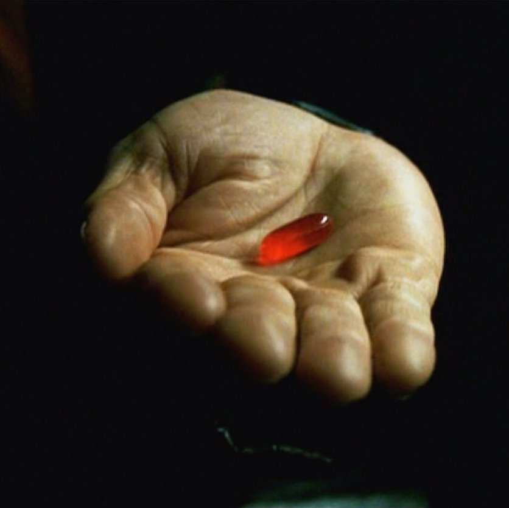

"You take the red pill, you stay in Wonderland, and I show you how deep the rabbit hole goes."-Morpheus
The term redpill refers to a human that is aware of the true nature of the Matrix.
are typically humans whose bodies and minds have been freed from the power plant by Zion hovercraft teams, but humans still connected to the Matrix can also be aware of its reality.
Usually, Redpills encounter anomalies or glitches in the system, or may free themselves from physical bonds by exceeding human limitations. In either of these cases, other Redpills find them and offer them freedom.
